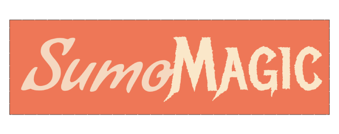
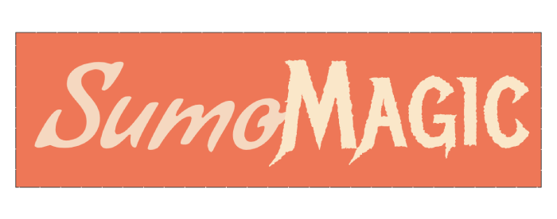

High Concept
Sumo fighting but players use magic instead of their palms
Genre
Action/Fighting
Platform
Desktop
Story
The character you select is entered in a sumo tournament so they can pay their gambling debts.
Esthetic
Graphics
Visuals are a mix between classic japanese art and fantasy imagery. The color scheme will consist of muted colors to reflect the look of old japanese paintings. The characters will be dressed robes, colored to match their primary element; however, they will retain the portly sumo body type.
Sound
The background music will also be inspired by japanese culture. There will be different sound effects for the characters' different attacks, interactions with the UI, and different gameplay states.
Gameplay
Mechanics
Like a real sumo match, the goal of this game is to push your oponent out of the ring. To accomplish this, each character has three attacks, a forward spell, a down spell, and a neutral spell. The forward spell is better at knocking opponents back, the down spell is better at defense, and the neutral spell is better at knocking the opponent of balance. Balance works like a stamina meter. It is emptied by getting attacked and gradually refills when idle. Once its empty, the character enters a weakened state where it becomes easier to knock them backwards. Regarding movement, the player can move forward to recover from getting knocked back; however, they are slightly more susceptible to getting knocked back while moving forward. Characters are also able to crouch, making it harder to be knocked back, but they lose their balance quicker when taking attacks. The forward spell is used when moving forward and the down spell is used while crouched.
Control
The game will be controlled with the keyboard. It will only need 3 buttons, a crouch button, a forward button, and an attack button.
Onboarding
There will be an instructions screen outlining the games mechanics.
Player Learning
To be successful, the player has to learn the relationship between the spells, their strengths and weaknesses, as well as the when and where to use them. A player could focus on breaking the other's balance with neutral attacks, then throwing the opponent back with a powerful foward attack.
Screenshots
 
